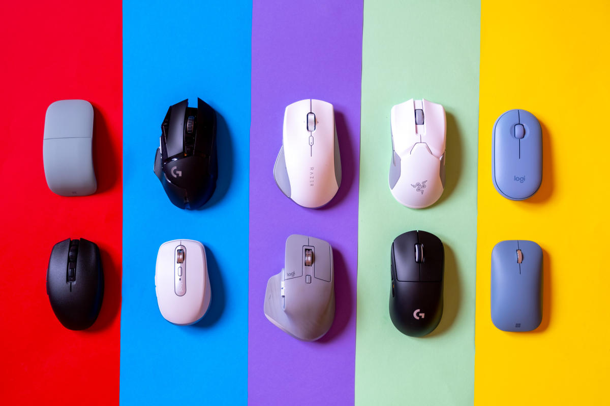
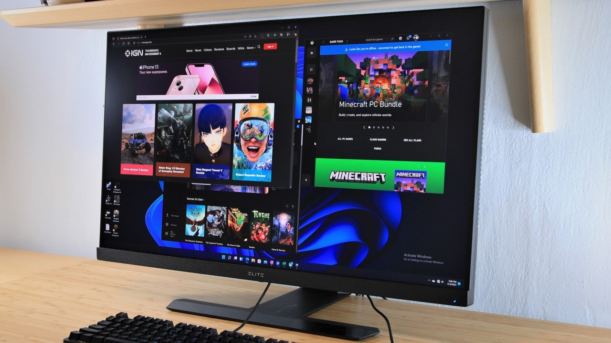
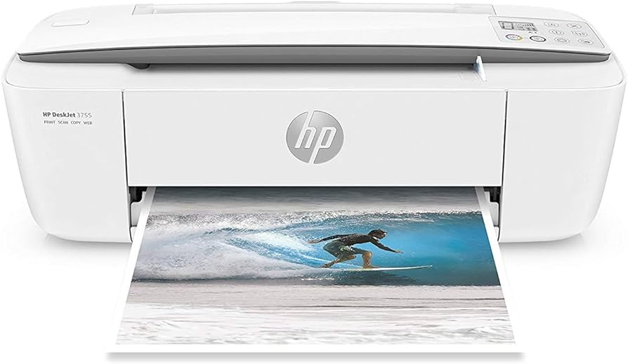
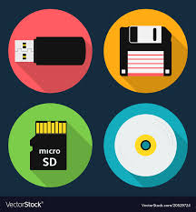

Basic Components of Computers
1 Keyboard
A keyboard is used to enter information into the computer
2 Optical mouse
a optical mouse uses LED to detect movement by sensing changes in light reflection to move around the screen

3 Monitor
A monitor is used to display the context of your computer and view the information you are working on
<
4 Printer
A Printer takes information from your computer and print it out onto paper

Memory/Storage Devices
Primary Memory

Temporary area for holding data
To store the program currently being executed
To hold data produced while the program is running
Ram (Random Access Memory

Major portion of the Primary Memory
Memory that is used by the program in execution
If the computer gets turned off, RAM will lose all the data
Static RAM

The memory retains as long as power remains
Uses Flip Flop circuitory
Dynamic RAM

Need continues Refreshing in order to maintain the data
It uses transistors and capacitors in circuits
Slow and consumes more power